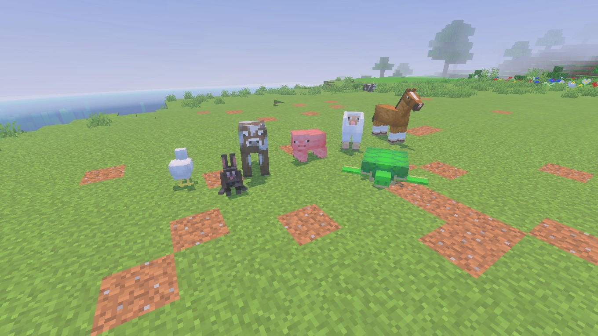
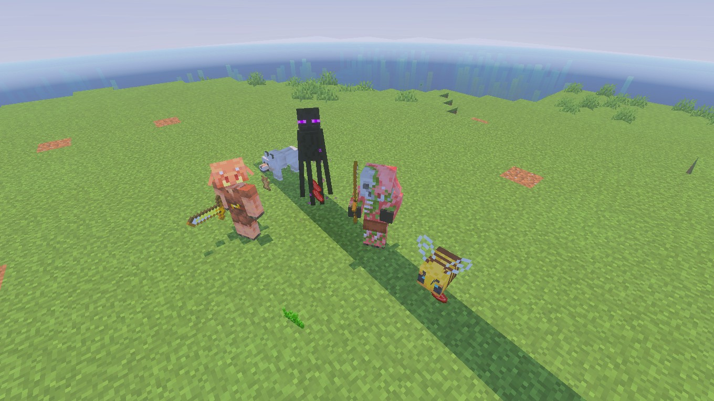
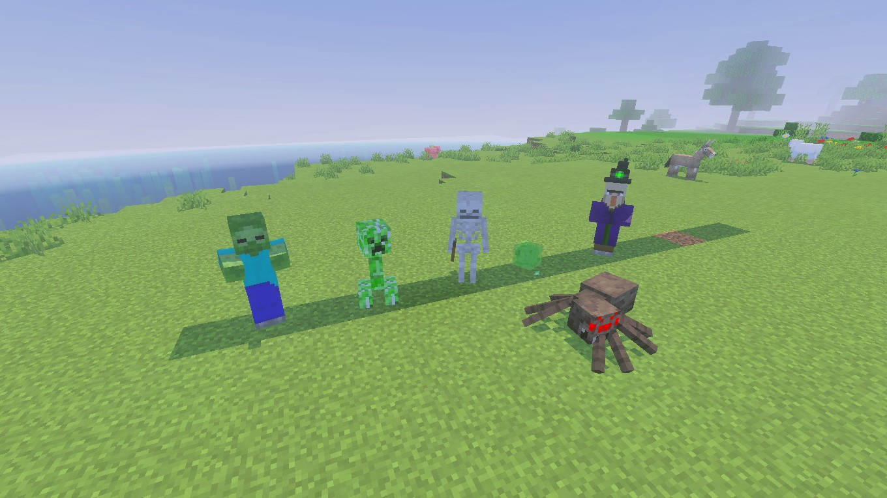
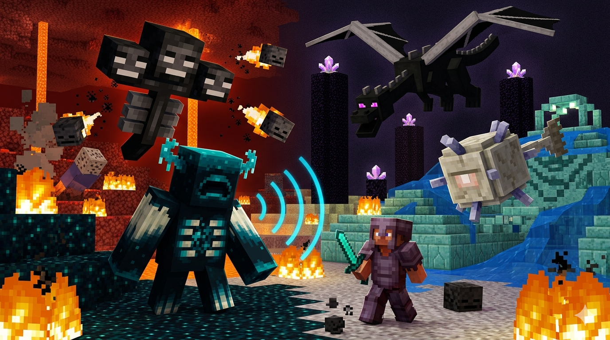
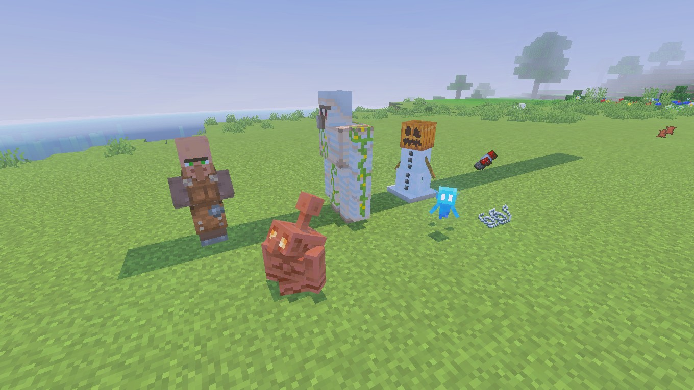

Mobs
Essa página apresentará as diversas criaturas (mobs) que habitam o vasto mundo de Minecraft.
Os mobs são divididos em categorias de acordo com seu comportamento em relação ao jogador, indo desde animais amigáveis até chefes poderosos.
Mobs Passivos
Mobs Passivos: Amigos e Recursos
Os mobs passivos são criaturas inofensivas que nunca atacam o jogador, mesmo se forem atacadas. Eles são essenciais para a sobrevivência, pois fornecem recursos vitais como comida, couro e lã.
Exemplos de Mobs:
* Animais de Fazenda: Vaca, Porco, Galinha e Ovelha.
* Montarias e Companheiros: Cavalo e Coelho.
* Vida Aquática: Tartaruga e Peixes diversos.
Por que são importantes: São geralmente os primeiros encontros do jogador no mundo e garantem o sustento inicial através da pecuária.

Mobs Neutros
Mobs Neutros: Respeito Mútuo
Criaturas neutras não atacam o jogador à primeira vista, mas podem se tornar extremamente hostis se forem provocadas, atacadas ou se certas condições forem atendidas (como olhar nos olhos de um Enderman).
Exemplos de Mobs:
* Lobo: Pode ser domesticado com ossos para se tornar um aliado.
* Enderman: Criatura alta que se teleporta e ataca se for encarada.
* Piglin: Habitante do Nether que só é pacífico se o jogador usar armadura de ouro.
* Outros: Abelha, Lhama e Golfinho.
Mecânica Especial: Mostram que o comportamento do jogador influencia diretamente o ambiente ao seu redor.

Mobs Hostis
Mobs Hostis: O Perigo da Noite
Essas criaturas são os principais antagonistas do jogador. Elas surgem em locais escuros ou durante a noite e atacam o jogador assim que o avistam, exigindo combate ou fuga para a sobrevivência.
Exemplos de Mobs:
* Clássicos: Zumbi, Esqueleto, Creeper e Aranha.
* Desafios Especiais: Bruxa e Slime.
* Ameaças de Dimensões: Blaze e Ghast (encontrados no Nether).
Sobrevivência: Aprender os padrões de ataque desses monstros é fundamental para progredir e explorar cavernas profundas com segurança.

Chefes (Bosses)
Chefes: Os Grandes Desafios
Os chefes são criaturas únicas e incrivelmente poderosas que possuem barras de vida visíveis no topo da tela. Derrotá-los marca os pontos mais altos da jornada de um jogador.
Os Principais Chefes:
* Ender Dragon: O dragão que habita a dimensão do Fim (The End). Derrotá-lo é considerado o "final" oficial do jogo.
* Wither: Um chefe de três cabeças que deve ser invocado pelo próprio jogador usando areia das almas e crânios de esqueleto wither.
Recompensas: Oferecem itens raros como o Ovo do Dragão e a Estrela do Nether, essenciais para criar itens avançados como o Sinalizador (Beacon).

Mobs de Utilidade
Mobs de Utilidade: Aliados Funcionais
São criaturas que podem ser criadas pelo jogador ou encontradas pelo mundo para realizar tarefas específicas, como proteção, transporte de itens ou trocas comerciais.
Exemplos de Mobs:
* Villager: Habitantes das vilas com quem você pode trocar recursos por itens valiosos.
* Iron Golem: Um gigante de ferro que protege os vilarejos e o jogador contra monstros.
* Snow Golem: Boneco de neve que atira bolas de neve nos inimigos para afastá-los.
* Allay: Criatura voadora que ajuda a coletar e organizar itens caídos no chão.
